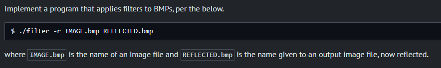
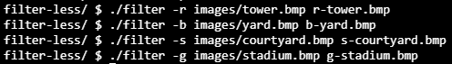
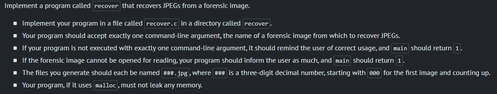

Week 4 - Memory
The themes for this week were:
Pointers. Segmentation Faults. Dynamic Memory Allocation. Stack. Heap. Buffer Overflow. File I/O. Images.
Problem Set 1 - Filter (less)
Input an image and output the same image with a filter applied to it. There will be 4 filters to build:
 Greyscale - Stadium
Before

After

Sepia - Courtyard
Before

After
Reflect - Tower
Before

After

Blur - Yard
Before

After

Problem Set 2 - Recover
Recover an image from being deleted by searching for signature patterns of JPEG files (starting with the first 3 bytes 0xff 0xd8 0xff and more options on the fourth byte).
Running this program allowed to recover 50 images from card.raw